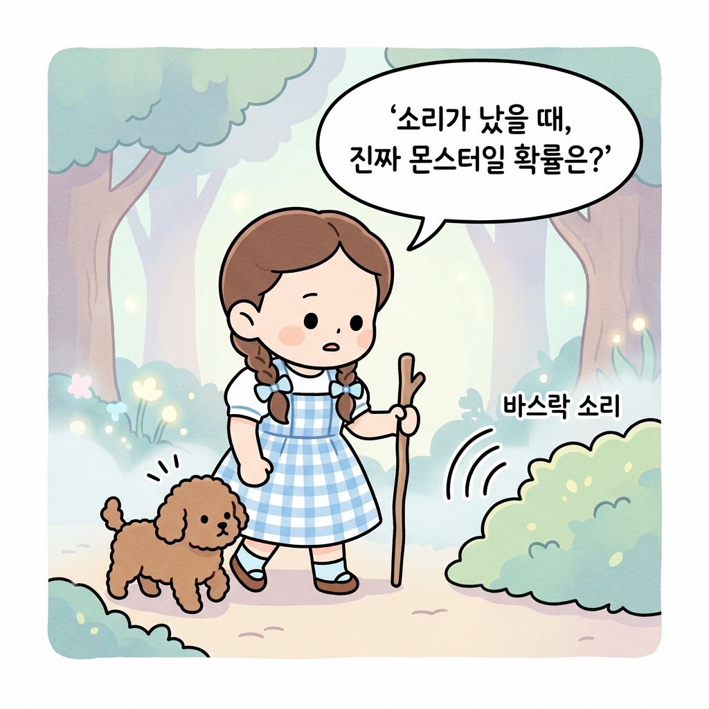
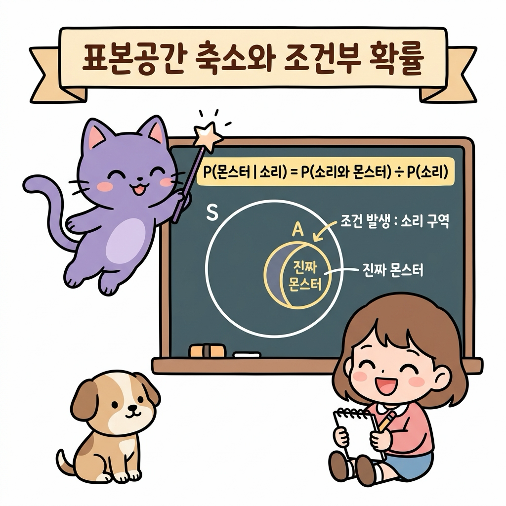
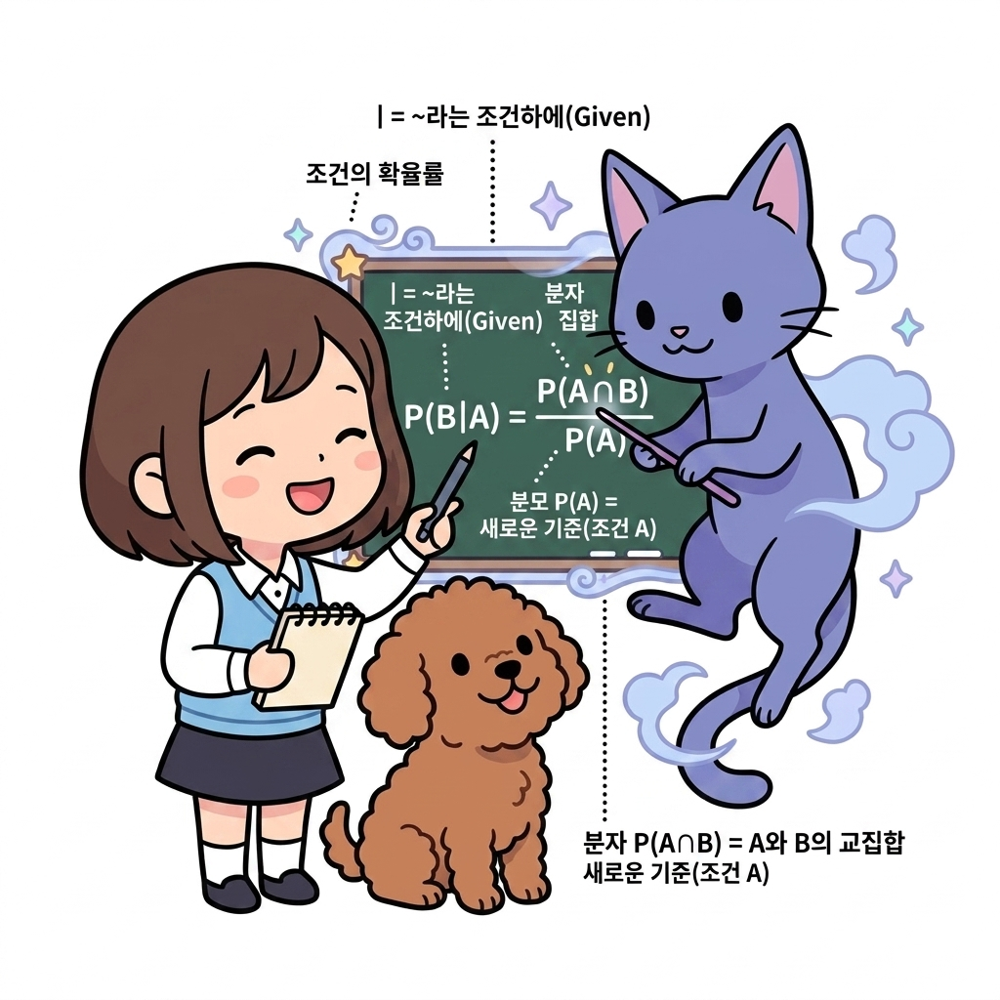
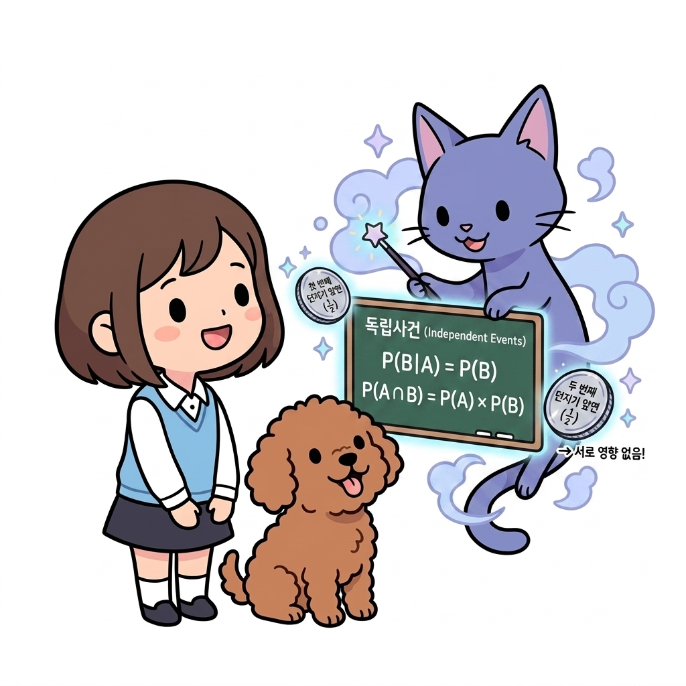
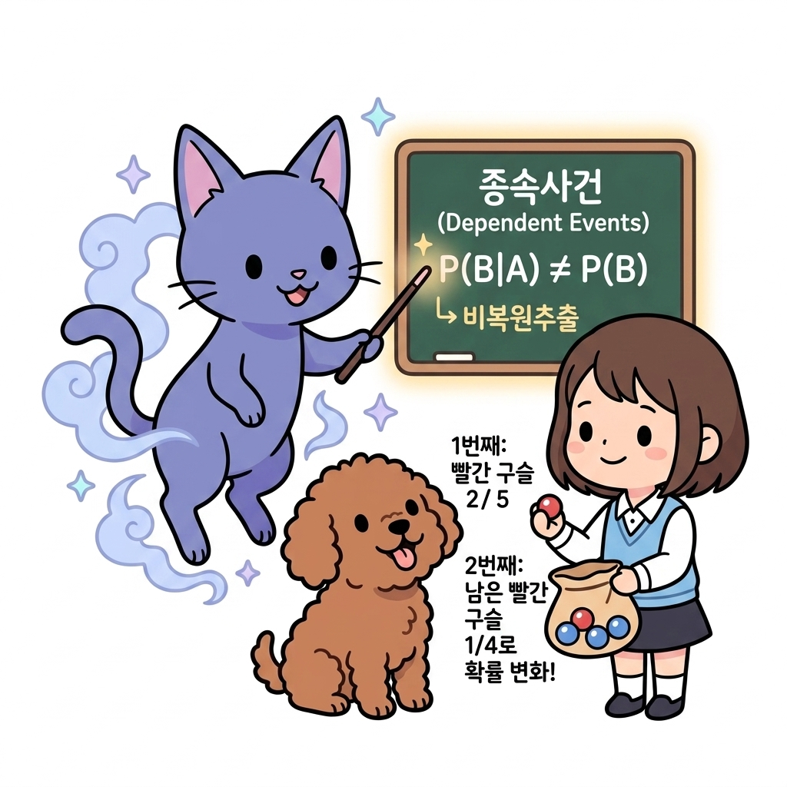
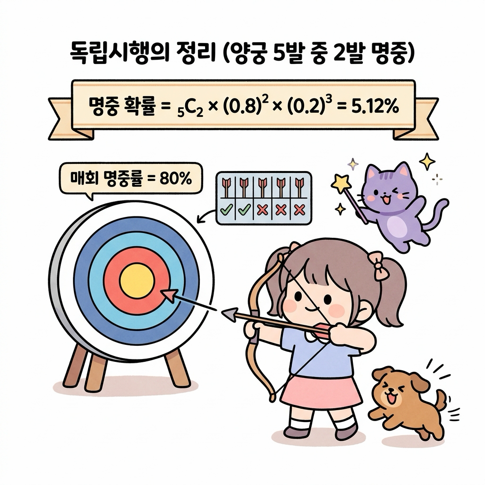
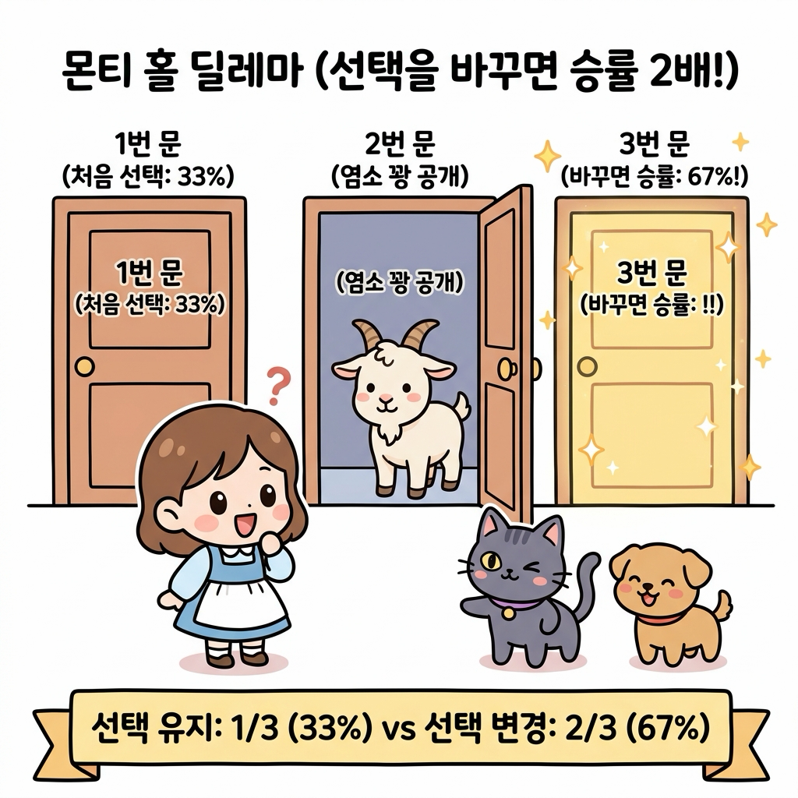
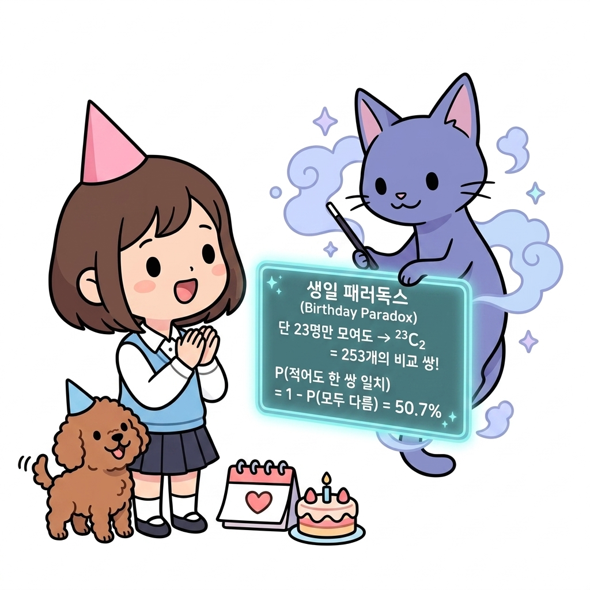
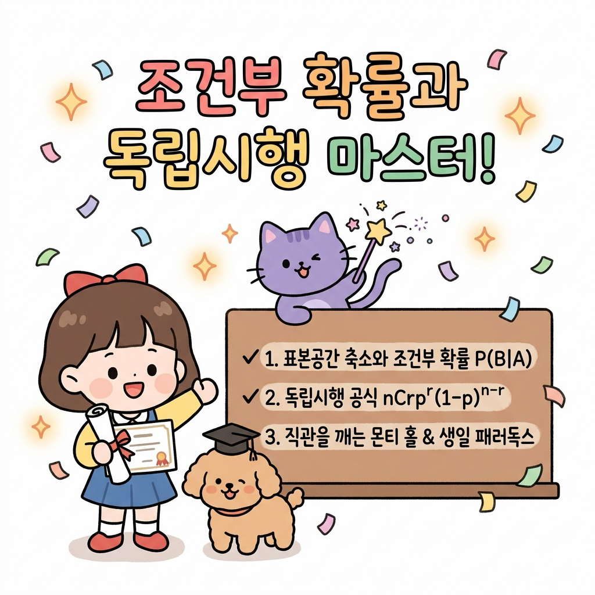

02.11 조건부 확률과 독립시행
이 장에서는 새로운 정보나 단서가 주어졌을 때 표본공간이 축소되며 확률이 갱신되는 조건부 확률(Conditional Probability)의 원리를 학습하고, 매회 독립적으로 반복되는 사건의 확률을 구하는 독립시행의 정리 및 인간의 직관을 깨뜨리는 몬티 홀 딜레마(Monty Hall Problem)와 생일 패러독스를 탐구합니다.
02.11.1 안개 속 단서와 조건부 확률 (Conditional Probability)
새로운 정보나 단서가 관측되면, 우리가 고려해야 할 전체 가능성의 범위(표본공간)는 단서가 일어난 영역으로 좁혀집니다.
“지니! 안개가 자욱하게 낀 어두운 숲(전쟁 안개, Fog of War)을 지나가고 있는데, 수풀 저편에서 ‘바스락’거리는 소리가 들렸어! 이 소리가 났을 때 진짜 몬스터를 마주치게 될 확률은 얼마나 돼? 아무 소리도 안 들렸을 때보다 몬스터를 만날 확률이 더 높아진 거지?”
도로시가 나무 지팡이를 짚은 채 두려움과 호기심이 섞인 눈빛으로 귀를 기울였습니다.
토토도 귀를 쫑긋 세우고 바스락거리는 수풀을 경계했습니다.

그림 02-11-1 안개 낀 숲에서 ‘바스락’ 소리 단서(조건)를 감지했을 때 몬스터가 존재할 사후 확률을 고민하는 도로시와 토토지니가 요술봉을 휘두르며 허공에 마법 칠판을 띄웠습니다.
“도로시! 아무런 정보가 없을 때의 단순 사전 확률과 달리, ‘소리가 났다’는 단서(사건 A)가 먼저 주어지면, 표본공간은 전체 세상 S가 아니라 ‘소리가 난 구역(A)’으로 즉시 압축된단다. 이 축소된 영역 안에서 몬스터가 존재하는 비율을 새롭게 구하는 것을 조건부 확률(Conditional Probability)이라고 부르지.”

그림 02-11-2 전체 표본공간 S가 관측된 조건 사건 A(소리 구역)로 축소되고, 그 내부의 교집합(진짜 몬스터) 비율을 계산하는 조건부 확률 공식 유도 원리2.11.1.1 조건부 확률의 수학적 정의와 기호 해설
| 사건 A가 일어났다는 전제하에 사건 B가 일어날 조건부 확률은 **_P(B | A)_** (B given A)라 표기하며 다음과 같이 정의합니다. |
- 기호와 수식의 직관적 해설:
-
**_P(B A)_ (조건부 확률)*: “사건 *A가 주어졌을 때(Given A), 사건 B가 일어날 확률”을 의미합니다. - 수직선 막대 | (Given, 조건): 수직선
|의 오른쪽에 적힌 사건 A가 ‘이미 일어난 전제 조건’임을 뜻합니다. - 분모 P(A) 또는 n(A) (새로운 기준): 조건 사건 A가 일어남으로써, 전체 세상(표본공간 S) 대신 사건 A의 영역 전체가 새로운 전체 기준(분모)으로 축소됩니다.
- 분자 P(A ∩ B) 또는 n(A ∩ B) (교집합 영역): 새로운 기준인 A 영역 중에서 우리가 관심 있는 목표 사건 B도 함께 겹쳐서 일어나는 교집합 영역의 크기입니다.
- 단, P(A) > 0: 조건 자체가 절대로 일어날 수 없는 사건(확률 0)이면 나눌 수 없으므로(분모는 0이 될 수 없음), 전제 조건의 확률은 항상 0보다 커야 합니다.
-

그림 02-11-3 조건부 확률 공식 P(B|A)의 각 기호(수직선 |, 분모 P(A), 분자 P(A ∩ B))가 의미하는 구조와 역할을 상세히 설명하는 지니와 도로시, 토토“아! 수직선 | 오른쪽의 A가 ‘새로운 기준(분모)’이 되고, 그 안에서 B와 겹치는 교집합이 ‘분자’가 되는 거구나! 기호의 위치만 봐도 공식이 머릿속에 쏙 들어와!”
도로시가 손뼉을 치며 환하게 웃었습니다.
02.11.2 독립사건과 종속사건의 판별
2.11.2.1 독립사건 (Independent Events)
한 사건 A가 일어났다는 사실이 다른 사건 B가 일어날 확률에 아무런 영향을 주지 않는 관계를 독립사건(Independent Events)이라 부릅니다.
- 수학적 정의와 판별식:
- 조건부 확률 정의에 따라, 사건 A가 발생했다는 조건이 붙더라도 사건 B의 확률이 본래 확률과 완전히 동일합니다: \(P(B|A) = P(B)\)
- 이를 조건부 확률 공식과 결합하면, 두 사건이 동시에 일어날 교집합 확률은 두 확률의 단순 곱으로 표현됩니다: \(P(A \cap B) = P(A) \times P(B)\)
- 대표 예시 (동전 던지기와 복원추출):
- 동전 2번 던지기: 첫 번째 던지기에서 앞면(A)이 나왔다고 해서 두 번째 던지기에서 앞면(B)이 나올 확률(1/2)이 변하지 않습니다.
- 주머니 복원추출: 주머니에서 공을 하나 꺼내 색깔을 확인한 뒤 다시 집어넣고 두 번째 공을 뽑으면, 주머니 안의 공 개수와 색상 비율이 처음 상태 그대로 유지되므로 두 시행은 완벽히 독립입니다.

그림 02-11-4 사건 A의 발생 여부가 사건 B의 확률에 영향을 주지 않는 독립사건의 정의(P(B|A) = P(B))와 동전 던지기 복원추출 예시를 설명하는 지니와 도로시, 토토“아하! 첫 번째 동전에서 앞면이 나왔든 뒷면이 나왔든, 두 번째 동전에서 앞면이 나올 확률은 여전히 50%(1/2)인 것처럼 서로에게 전혀 간섭하지 않는 관계가 바로 ‘독립’이구나!”
도로시가 고개를 끄덕였습니다.
2.11.2.2 종속사건 (Dependent Events)
한 사건 A의 발생 여부가 다른 사건 B가 일어날 확률에 직접적인 영향을 미치는 관계를 종속사건(Dependent Events)이라 부릅니다.
- 수학적 정의와 판별식:
- 사건 A가 일어났다는 조건이 주어지면, 사건 B의 확률이 본래 확률과 달라집니다: \(P(B|A) \neq P(B)\)
- 따라서 두 사건이 연속으로 일어날 교집합 확률은 두 번째 확률로 조건부 확률 P(B|A)를 곱해야 합니다 (확률의 곱셈정리): \(P(A \cap B) = P(A) \times P(B|A)\)
- 대표 예시 (비복원추출 - 구슬 주머니):
- 주머니 속에 빨간 구슬 2개, 파란 구슬 3개(총 5개)가 들어 있습니다.
- 첫 번째 구슬 (사건 A): 빨간 구슬을 뽑을 확률은 P(A) = 2/5 (40%)입니다.
- 두 번째 구슬 (사건 B): 뽑은 빨간 구슬을 다시 넣지 않고(비복원추출) 두 번째 구슬을 뽑으면, 주머니에 남은 구슬은 총 4개(빨강 1, 파랑 3)로 상태가 변합니다.
-
따라서 두 번째에도 빨간 구슬이 나올 조건부 확률은 *P(B A)* = 1/4 (25%)로 뚝 떨어집니다. (*P(B A)* ≠ P(B))

그림 02-11-5 앞선 시행의 결과가 주머니 속 공의 구성(상태)을 변화시켜 다음 확률에 영향을 미치는 종속사건(P(B|A) ≠ P(B))의 비복원추출 원리를 설명하는 지니와 도로시, 토토“아하! 첫 번째에 빨간 구슬을 쏙 빼버리니까 주머니의 상태가 바뀌어서, 두 번째에 빨간 구슬이 나올 확률이 40%에서 25%로 줄어드는구나! 앞의 선택이 뒤의 확률을 바꾸는 관계가 바로 ‘종속’이네!”
도로시가 손에 쥔 빨간 구슬을 보며 감탄했습니다.
02.11.3 독립시행의 정리 (Binomial Trials)
매회 동일한 조건에서 시행을 반복하여 매 시도의 성공 확률이 이전 결과에 영향을 받지 않는 독립적인 연쇄 시행을 독립시행이라 합니다.
“지니! 내가 훈련장에서 양궁 활쏘기 연습을 하고 있어. 매번 화살을 쏠 때 과녁을 맞힐 확률이 0.8(80%)로 일정하다고 해보자. 총 5발을 쐈을 때, 정확히 2발만 명중시킬 확률은 어떻게 구해?”
도로시가 활시위를 당기며 물었습니다. 토토는 과녁 옆에서 꼬리를 흔들며 응원했습니다.

그림 02-11-6 매회 사격 성공률(80%)이 일정한 독립시행 환경에서 5번의 시도 중 2번 성공할 조합과 확률을 계산하는 도로시와 지니, 토토지니가 수식을 칠판에 적으며 설명했습니다.
“총 5번의 시도 중 어느 2번에서 명중할 것인지 자리를 고르는 조합(5C2)에, 성공 확률 2번의 거듭제곱(0.82)과 실패 확률 3번의 거듭제곱(0.23)을 연이어 곱해주면 된단다.”
\[P(X = r) = _nC_r \times p^r \times (1 - p)^{n - r}\]- 양궁 5발 중 2발 명중 계산: \(P(X = 2) = _5C_2 \times (0.8)^2 \times (0.2)^3 = 10 \times 0.64 \times 0.008 = 0.0512\ (5.12\%)\)
02.11.4 직관을 깨뜨리는 확률의 역설
인간의 직관적인 어림짐작과 실제 수학적 계산이 극명하게 갈리는 대표적인 유명 퍼즐들입니다.
2.11.4.1 몬티 홀 딜레마 (Monty Hall Problem)
퀴즈 쇼 무대에 닫힌 3개의 문(1번, 2번, 3번)이 있습니다. 한 문 뒤에는 ‘황금 자동차(당첨)’, 나머지 두 문 뒤에는 ‘염소(꽝)’가 있습니다.
- 도로시가 1번 문을 선택했습니다. (당첨 확률 1/3 = 33%)
- 어디에 차가 있는지 알고 있는 사회자가 남은 2번, 3번 문 중 꽝인 2번 문을 열어 염소를 보여주었습니다.
- 사회자가 묻습니다: “1번 문을 고수하시겠습니까, 아니면 3번 문으로 바꾸시겠습니까?”

그림 02-11-7 몬티 홀 퀴즈 쇼 무대에서 사회자가 2번 문의 염소(꽝)를 공개했을 때, 선택을 3번 문으로 바꾸는 것이 승리 확률을 2/3(67%)로 2배 높여줌을 보여주는 시각화“그냥 문이 2개 남았으니까 반반(50% : 50%) 아니야?”
도로시가 갸우뚱거리자, 지니가 빙그레 웃으며 답했습니다.
“아니란다! 도로시가 처음에 차를 골랐을 확률은 1/3이고, 꽝을 골랐을 확률은 2/3였어. 도로시가 처음에 꽝을 골랐다면 사회자는 남은 꽝을 열어줄 수밖에 없으므로, 선택을 바꾸면 무조건 차를 얻게 된단다! 따라서 선택을 바꾸었을 때의 당첨 확률은 2/3(약 67%)로 2배나 껑충 뛰게 되지!”
2.11.4.2 생일 패러독스 (Birthday Paradox)
1년 365일 중, 한 방에 단 23명의 사람만 모여 있어도 생일이 같은 사람이 적어도 한 쌍 이상 존재할 확률은 약 50.7%로 절반을 훌쩍 넘습니다. (30명이 모이면 70.6%, 50명이 모이면 무려 97.0%에 도달!)
직관적으로는 1년이 365일이나 되므로 23명 정도로는 생일이 겹치기 어려울 것 같지만, 실제로는 “비교할 수 있는 쌍(Pair)의 조합 수”가 폭발적으로 증가하기 때문입니다.
- 비교 가능한 쌍의 조합 수:
- 23명 중에서 2명을 짝지어 생일을 비교할 수 있는 모든 쌍의 수는 조합(23C2)으로 계산됩니다: \(_{23}C_2 = \frac{23 \times 22}{2} = 253\text{쌍}\)
- 무려 253번이나 생일이 같은지 맞춰볼 기회가 생기므로 겹칠 확률이 급격히 치솟습니다.
- 여사건을 이용한 수학적 증명 (모두 생일이 다를 확률):
- 23명의 생일이 모두 다를 확률은 비복원추출처럼 순차적으로 곱하여 구합니다: \(P(\text{모두 다름}) = \frac{365}{365} \times \frac{364}{365} \times \frac{363}{365} \times \dots \times \frac{365 - 23 + 1}{365} \approx 0.4927\ (49.27\%)\)
- 따라서 여사건 공식에 의해 적어도 한 쌍의 생일이 일치할 확률은: \(P(\text{적어도 한 쌍 일치}) = 1 - P(\text{모두 다름}) = 1 - 0.4927 = 0.5073\ (50.73\%)\)

그림 02-11-8 단 23명만 모여도 253개의 비교 쌍(₂₃C₂ = 253)이 생성되어 생일이 겹칠 확률이 50%를 초과하는 생일 패러독스의 원리를 설명하는 지니와 도로시, 토토“와! 1년 365일 중에서 나와 생일이 같은 특정 사람을 찾는 게 아니라, 23명 안에서 ‘아무나 둘이 겹치는 쌍’을 찾는 거니까 253쌍이나 비교할 수 있어서 확률이 50%를 훌쩍 넘는 거였구나!”
도로시가 고깔모자를 쓰고 손뼉을 치며 신기해했습니다. 토토도 꼬리를 흔들었습니다.
02.11.5 파이썬으로 구현하는 몬티 홀 & 독립시행 시뮬레이터
파이썬의 random 모듈로 몬티 홀 게임을 100,000번 시뮬레이션하여 선택을 바꾸는 전략의 우수성을 검증합니다.
- 예제 파일: monty_hall_and_binomial.py
import random
import math
def monty_hall_simulation(trials=100000):
stay_wins = 0
switch_wins = 0
random.seed(42)
for _ in range(trials):
# 3개의 문 중 무작위로 1곳에 자동차(1), 나머지 2곳에 염소(0) 배치
doors = [0, 1, 2]
car_door = random.randint(0, 2)
player_choice = random.randint(0, 2)
# 사회자는 플레이어가 선택하지 않았고, 자동차도 없는 꽝 문을 열어 공개
possible_host_doors = [d for d in doors if d != player_choice and d != car_door]
host_door = random.choice(possible_host_doors)
# 선택을 바꿀 경우 남은 문
switch_choice = [d for d in doors if d != player_choice and d != host_door][0]
# 승리 카운팅
if player_choice == car_door:
stay_wins += 1
if switch_choice == car_door:
switch_wins += 1
print(f"=== 몬티 홀 시뮬레이션 ({trials:,}회 시행) ===")
print(f"1. 처음 선택 유지 시 승률: {stay_wins / trials * 100:.2f}% (이론값 33.33%)")
print(f"2. 다른 문으로 변경 시 승률: {switch_wins / trials * 100:.2f}% (이론값 66.67%)")
monty_hall_simulation()
# 독립시행 양궁 계산
n, r, p = 5, 2, 0.8
binomial_prob = math.comb(n, r) * (p ** r) * ((1 - p) ** (n - r))
print(f"\n양궁 5발 중 2발 명중 확률 (n=5, r=2, p=0.8): {binomial_prob * 100:.2f}%")
[실행 결과]
=== 몬티 홀 시뮬레이션 (100,000회 시행) ===
1. 처음 선택 유지 시 승률: 33.36% (이론값 33.33%)
2. 다른 문으로 변경 시 승률: 66.64% (이론값 66.67%)
양궁 5발 중 2발 명중 확률 (n=5, r=2, p=0.8): 5.12%
💡 코드 해석: 10만 번의 컴퓨터 시뮬레이션 결과, 문을 바꾸었을 때의 승률이 정확히 66.64%(2/3)로 유지했을 때의 33.36%(1/3)보다 정확히 2배 높게 나타나 수학적 직관의 오류를 명확히 입증합니다.
02.11.6 실전 예제
학습한 내용을 바탕으로 다음 문제를 직접 해결해 봅시다.
2.11.6.1 문제 1 (비복원추출 조건부 확률과 곱셈정리)
주머니 속에 빨간 구슬 2개와 파란 구슬 3개(총 5개)가 들어 있습니다. 구슬을 한 개씩 연속해서 두 번 꺼낼 때(꺼낸 구슬은 다시 넣지 않음), 두 번 모두 빨간 구슬이 나올 확률을 구하시오.
풀이:
- 첫 번째에 빨간 구슬을 꺼낼 사건을 A라 하면: \(P(A) = \frac{2}{5}\)
- 첫 번째 빨간 구슬이 빠져나간 후 남은 4개(빨강 1, 파랑 3) 중 두 번째에 빨간 구슬을 꺼낼 조건부 확률은: \(P(B|A) = \frac{1}{4}\)
- 확률의 곱셈정리에 따라 두 사건이 연속으로 발생할 확률은: \(P(A \cap B) = P(A) \times P(B|A) = \frac{2}{5} \times \frac{1}{4} = \frac{2}{20} = \frac{1}{10}\ (10\%)\) 정답: 1 / 10 (10%)
2.11.6.2 문제 2 (독립시행 주사위 던지기)
주사위 1개를 4번 던질 때, 1의 눈이 정확히 3번 나올 확률을 구하시오.
풀이:
- 1회 시행 시 1의 눈이 나올 성공 확률 p = 1/6, 실패 확률 1 - p = 5/6
- 총 시행 횟수 n = 4, 성공 횟수 r = 3
- 독립시행 공식 적용: \(P(X = 3) = _4C_3 \times \left(\frac{1}{6}\right)^3 \times \left(\frac{5}{6}\right)^1 = 4 \times \frac{1}{216} \times \frac{5}{6} = \frac{20}{1296} = \frac{5}{324} \approx 0.01543\ (1.54\%)\) 정답: 5 / 324 (약 1.54%)
02.11.7 핵심 요약

그림 02-11-9 표본공간의 축소를 수반하는 조건부 확률과 독립시행 공식, 몬티 홀 딜레마와 생일 패러독스의 원리를 정복한 도로시와 지니, 토토-
*조건부 확률(P(B A))**: 새로운 단서나 조건 *A가 관측되면 전체 표본공간이 사건 A의 영역으로 축소되며, 그 안에서 교집합의 비율(P(A ∩ B) / P(A))을 구한다. - 독립과 종속: 이전 사건이 다음 사건에 영향을 미치지 않으면 독립사건(P(A ∩ B) = P(A)P(B)), 영향을 미치면 종속사건이다.
- 독립시행의 정리: 매회 성공률 p가 일정한 독립 실험을 n번 반복하여 r번 성공할 확률은 nCr pr (1-p)n-r로 계산한다.
- 확률적 직관의 교정: 몬티 홀 딜레마(선택 변경 시 2/3 승률)와 생일 문제(23명만으로 50% 돌파)는 인간의 어림짐작을 깨뜨리는 정교한 수학적 통찰을 제공한다.